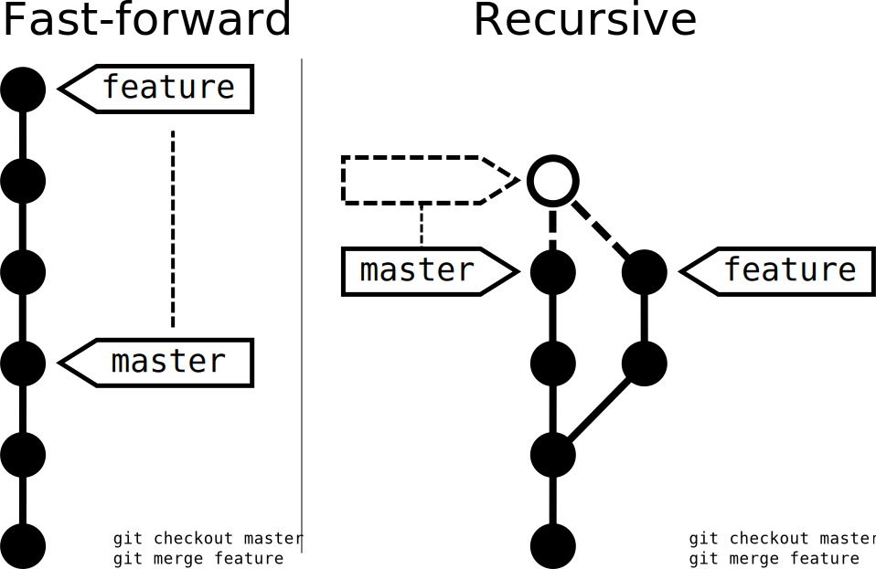

Git Workshop
Intro - why git?
- distributed version control system
- initially designed and developed by Linus Torvalds for Linux kernel development in 2005
most widely adopted version control system for software development
unlike most client–server systems, every Git working directory is a full-fledged repository with complete history and full version-tracking capabilities
independent of network access or a central server
Theory
finally figuring out that git commands are strangely named graph manipulation commands--creating/deleting nodes, moving pointers around
-- Kent Beck https://twitter.com/kentbeck/status/42657237986054144
Basic Workflow

Keeping a History
 (
(- changes stored in commits
- each commit references its parent
- => linked list building a history of your code
Branches
git gets easier once you get the basic idea that branches are homeomorphic endofunctors mapping submanifolds of a Hilbert space.
-- https://twitter.com/tabqwerty/status/45611899953491968

- a branch is a named reference to a commit
- it moves along as you make new commits
Dealing with branches

- working code is on
masterbranch - branch off to do your work
- throw away branches after merging to master branch
Getting fancy with Git flow: http://nvie.com/posts/a-successful-git-branching-model/
Merges
- "get that code from my branch into the
masterbranch" - what if target branch has changed in between time? merge conflict
- trivial merges are made automatically
- different file changed
- same file, different location changed
- changes to the same file in similar locations must be resolved manually
- trivial merges are made automatically
Merge Strategies

- FF: does not touch history, only branches
- Recursive: creates a merge commit
Remotes

- "other locations" of your project's source code
- conventions:
- "origin", services our code centrally
- "upstream", services as original code base when we are working on a fork
Now, git your hands dirty!
Prerequisites (on Ubuntu)
sudo apt-get install git openssh-client
ssh-key-gen -b 4096 -C 'your.email@example.com'
Configuring Git
git config --global user.name 'Your Name'
git config --global user.email 'your.email@example.com'
Basic Commands
git help
Stuff to stage ...
git add
git rm
git mv
From Stage to Repository
git commit
Variants:
git commit -m 'Use describing message'
git commit -am 'Commit all the things!'
Pro Tip: https://github.com/erlang/otp/wiki/Writing-good-commit-messages
Undo things
Warning, there be dragons ahead!
git reset
git revert
git clean
Branches, Merges, Conflicts, ...
git branch
git checkout
git merge
Getting fancy with rebase
- "Cuts" your history and "glues" it onto the desired commit
- actually does not cut anything, all commits are replayed (i.e. a copy is created)
Working with remote repositories
git remote
git clone
git pull
git push
Goodies
Improve your git experience
- use bash aliases: alias gs='\git status'
- Customize your console: https://github.com/git/git/tree/master/contrib/completion
Discover more git capabilities
- git stash
- git commit --amend
- git cherry-pick
- git reflog
- git rerere
- git instaweb --http=webrick
Must Reads / Good Practices
- http://marklodato.github.io/visual-git-guide/index-en.html
https://github.com/erlang/otp/wiki/Writing-good-commit-messages
Keep your commits tiny, use
git add -poftenKeep commit messages short, "use present tense"
Lost? Git Help!
- The officials: http://git-scm.com/ -- "ProGit" book
- Git Einführung: http://www.linuxtag.org/2013/fileadmin/www.linuxtag.org/slides/Julius_Plenz_-_Git-Einfuehrung.e141.pdf
- Git Goodies: http://tokkee.org/talks/froscon12-git-goodies.pdf